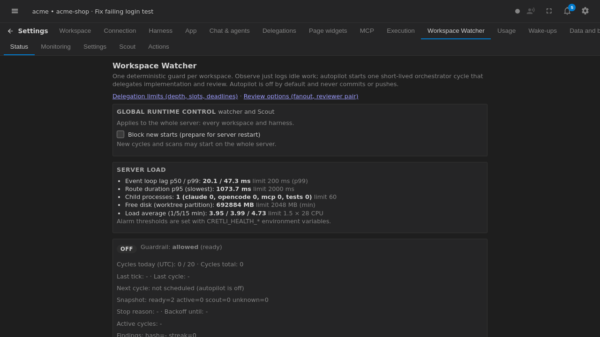

Workspace Watcher
Workspace Watcher observes a workspace and coordinates recurring work. Its modes are off, observe, and autopilot. Turn it off when no monitoring is wanted; use observe for inspection and reporting; use autopilot when the configured workflow may schedule execution.

Control the feature in Settings → Workspace Watcher. One Watcher cycle creates one orchestrator chat. The orchestrator may inspect the workspace, create or update TODOs, and coordinate delegated work according to the configured harnesses.
The plan gate remains human-controlled: Watcher does not approve a plan automatically. Watcher also does not commit or push changes. Review the resulting TODO, plan, files, and test output before integrating work into your normal branch workflow.
For configuration details, event handling, and operational limits, see the Workspace Watcher technical guide.